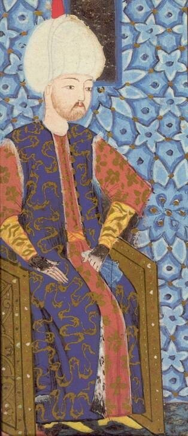

При обсуждении численного состава турецкой армии, участвующей в осаде Родоса, возникли сомнения в реальности приводимых обобщенных цифр: 100 тысяч сухопутная армия султана и 300 кораблей и судов военно-морского флота османов. При этом основным аргументом было использование, якобы, при выводе этих цифр источников и оценок лишь одной стороны, т.е. стороны госпитальеров и игнорирование турецкой точки зрения.

Я не ставил и не ставлю целью написание монографии по осадам Родоса и Мальты в XVI веке, цель моя скромнее – дать информационный фон для последующего описания особенностей боевого применения галер иоаннитами и влияния его на развитие галерного флота в других странах Западной Европы. Но коли возникли сомнения, попробуем их разрешить.
При всем обилии, я бы даже сказал необъятном изобилии материалов по осадам Родоса 1480 и 1522 годов опираются они, в сущности, на несколько сохранившихся базовых документов. Для осады 1480 года – это рукопись Каорсина, вице-канцлера ордена госпитальеров, участника осады, хранящаяся во французской Национальной библиотеке в Париже и изданная Верто в 1726 году. Для осады 1522 года имеются три версии: турецкая, арабская и французская. Турецкая основана на рукописи Ахмеда Хафуза, арабская – по Рамадану, и, наконец, французская - по записям Жака, бастарда де Бурбона. Впоследствии эти источники были широко растиражированы в различных изданиях по истории мальтийского ордена. Каноническими для турецкого и французского вариантов является издание аббата Верто « Relation du siège de Rhodes en 1485 (1522) par le commandeur de Bourbon, témoin oculaire ». Арабская версия была опубликована Tercier в 1759 г.
Приведем перевод некоторых выдержек из турецкого варианта событий, относящихся к уже рассмотренному нами выше периоду. Ввиду того, что времени на этот перевод много выделить не могу, прошу не придираться к стилю.
«Визири султана представили ему Родос как гнездо дерзких пиратов, безнаказанно нарушающих права других людей, торговые связи и препятствующих благоверным мусульманам, совершающим хадж в Мекку, захватывая многих из них в плен. Они напомнили султану, что все его славные предки лелеяли мысль об овладении знаменитым замком Родоса, что султан Мухаммад Хан (султан Muhammed Khan II (1440-1481)-g._g.), благословенна его память, послал Меши-Пашу со значительными силами, которым не удалось взять эту ужасную крепость, несмотря на все прилагаемые усилия в течение трех месяцев осады. Эта неудача еще больше усилила бесстыдство неверных, которые еще больше укрепились, не признавая другого бога, кроме идола, которого они называют San Givan (св. Иоанн Иерусалимский -g._g.). Все страны неверных (Европа -g._g.) посылают им дары и передали в пользование их вукуфов (законодательно закрепив объекты в пользование религиозной общине -g._g.) все замки и деревни острова. Эта картина, которая подтверждается мусульманскими купцами, благоверными паломниками, и заслуживающими доверия письменными донесениями, привели в гнев славного Султана, милосердного отца своего народа, и он поклялся захватить Родос, моля Аллаха помочь ему в этом предприятии. Султан немедленно открыл двери имперской казны, призвал верного своего визиря Азим-Пашу и приказал черпать из казны, не задумываясь, любые средства, необходимые для самого лучшего вооружения, чтобы обеспечить предприятие; поскольку Родос обоснованно пользуется славой неприступной крепости, это известно всем, подготовка должна проводиться соответственно. К работе приступили немедленно, было отлито дополнительно 1000 орудий, пушек и мортир; из арсеналов было востребовано большое количество фузей, сабель, секир, и оружия других видов, которые необходимо было погрузить на корабли флота империи.»
«Военно-морские силы Сулеймана состояли из 500 галер, 50 мавн, 50 бастард, 100 калит и фрегатов. На все эти корабли потребовалось 40 000 гребцов, они несли 25 000 солдат пехоты (в арабской версии Рамадана, который также приводит эти цифры, число солдат называется только 10 000-g._g.), которые согласно высочайшей воле были поставлены санджак-беями и бейлер-беями (так в тексте; верховными правителями -g._g.) провинций вместе с полным вооружением и оснащением. Могучий султан имел желание полностью обновить эти войска. Эти рекруты прибывали подивизионно, впереди них шли улемы, затем несли большие знамена Ислама, за которыми шли трубачи. Они незамедлительно были распределены между кораблями флота. Погрузка каждой дивизии сопровождалась молитвой народа и благословением султана, и эти молитвы были повторены на каждом корабле, на борт которых вступали войска.»
«Все корабли собрались между Имперским Арсеналом и Галатой, напротив мечети Айюба, подняв паруса 10 Раджаба 928 г.х. (5 июня 1522 года), покрыв собою всю поверхность моря до Бешихтаса. Каждая галера, каждый мавн, каждая калита, каждый фрегат нес на носу, на корме, на мачтах знамена Ислама, сверкая золотом шитья под дуновением бриза. Звуки молитвы из тысяч уст, сопровождаемые звуками зурны, вдохновенными гимнами гребцов, плеском голубых волн, серебристыми струями за кормой, мерными ударами весел, скрипом снастей, создавали гармонию ликования и радовали глаз. Этот день стал радостным для ислама, успех предприятия не вызывал ни у кого сомнения.»
Продолжение будет.